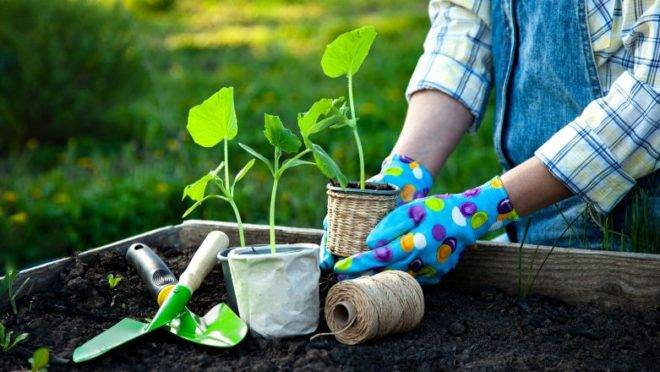

Para você que gosta de jardinagem e pratica essa atividade de forma recreativa, saiba que existem diversas ferramentas que podem facilitar o trabalho no jardim de sua casa. Os serviços de jardinagem e paisagismo visam o embelezamento e a manutenção de canteiros, vasos, jardins e até mesmo de espaços públicos como praças e parques. Como há várias ferramentas de jardinagem no mercado, separamos especialmente para você alguns equipamentos básicos para a manutenção de plantas ornamentais domésticas. Confira!
Se você quer desenvolver um serviço bem executado de jardinagem é necessário ter paciência, dedicação e ferramentas de jardinagem especiais como pás, enxadas, ancinhos, tesouras de poda, pulverizador, sancho, serrote de poda, vassoura de jardim e carrinho de mão.